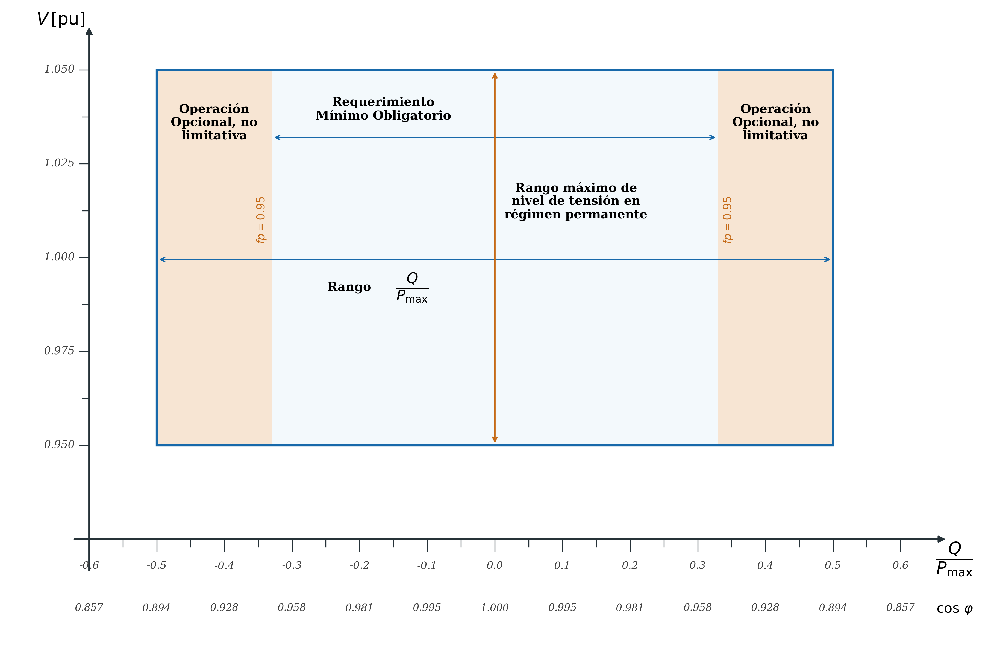
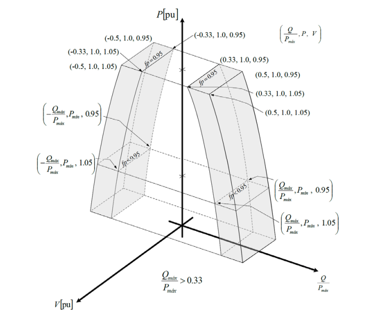
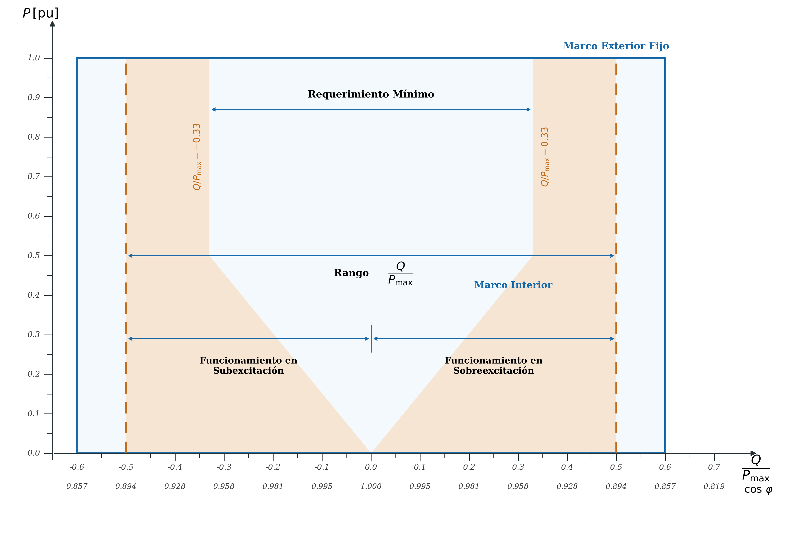
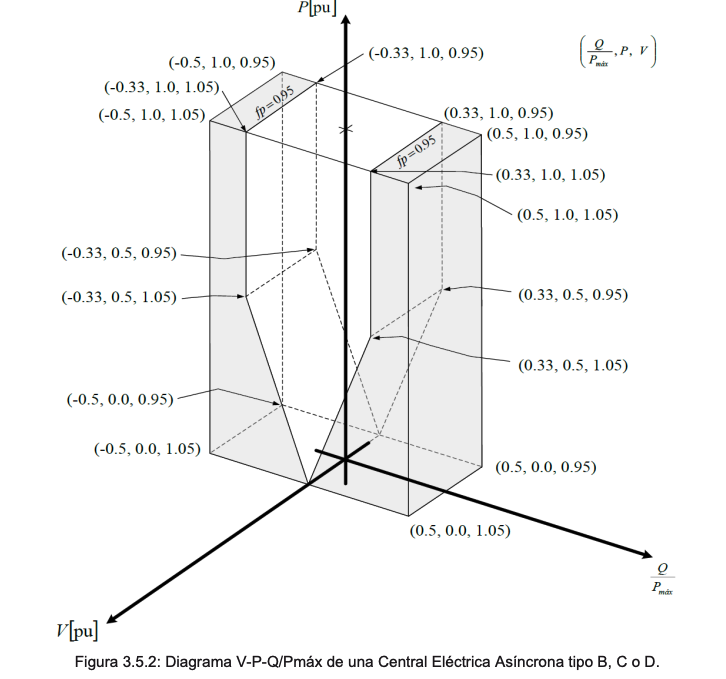

Capítulo 3. Requerimientos de Interconexión ante variaciones de tensión de la Red Eléctrica
El Capítulo 3 establece los límites de tensión que deben tolerar las Centrales Eléctricas en régimen permanente (3.1) y los requerimientos de control de potencia reactiva y tensión diferenciados por tipo de máquina (Síncrona: 3.2–3.4; Asíncrona: 3.5). Su relación con el Capítulo 4 es directa: aquí se definen las bandas de operación en estado estacionario; Cap. 4 define las curvas de ride-through durante fallas transitorias.
3.1Requerimientos Generales — Tipos B, C y D
3.1.1 Rangos de Tensión en Régimen Permanente
| Área Síncrona | Rango de tensión en el PI [pu] | Tiempo mínimo de operación |
|---|---|---|
| Todos los sistemas: SIN · SIBC · SIBCS · SIM (Mulegé) | 1.05 pu < V < 1.10 pu | 30 minutos |
| 0.95 pu < V < 1.05 pu | Ilimitado (operación nominal) | |
| 0.90 pu < V < 0.95 pu | 30 minutos |
El CENACE puede establecer períodos más cortos ante condiciones simultáneas adversas —sobretensión con baja frecuencia, o baja tensión con alta frecuencia— que se refuerzan mutuamente en términos de estrés sobre los equipos. La Tabla 3.1.1 aplica igual para los cuatro sistemas interconectados, a diferencia de la Tabla 2.1 (frecuencia) que diferencia SIBCS/SIM en el límite superior.
3.2Control de Tensión y Potencia Reactiva — CE Síncrona Tipo B
3.2.1 Capacidad de Potencia Reactiva
La Central Eléctrica Síncrona tipo B debe tener la capacidad de mantener su potencia reactiva en el Punto de Interconexión en un rango de factor de potencia de al menos 0.95 en atraso y 0.95 en adelanto. RES/550/2021, Manual INTE, Cap. 3 3.2.1 — DOF 31-dic-2021 · PDF p. 224
Un FP de 0.95 en atraso/adelanto equivale a una capacidad reactiva de ±Q/S ≈ ±0.312 (ya que tan(arccos 0.95) ≈ 0.329). Para una CE de 10 MW operando a FP nominal, esto implica poder entregar o absorber ~3.3 MVAr en el PI. Este es el requerimiento mínimo; en la práctica los generadores síncronos modernos tienen capacidades mayores que no deben limitarse.
3.2.2 Sistema de Control Automático de Excitación (RAT)
La Central Eléctrica Síncrona tipo B debe estar equipada con un sistema de control automático de excitación permanente que pueda proporcionar una tensión constante en el Punto de Interconexión a una consigna seleccionable, sin causar inestabilidad en todo el rango de operación de su Curva de Capabilidad. RES/550/2021, Manual INTE, Cap. 3 3.2.2 — DOF 31-dic-2021 · PDF p. 224
3.3Control de Tensión y Potencia Reactiva — CE Síncrona Tipo C
Aplican los requerimientos del 3.2, más los siguientes. El salto del tipo B al tipo C es significativo: la CE pasa de cumplir un simple requisito de FP a demostrar un perfil V-Q/Pmáx completo, adaptarse a cualquier punto de ese perfil en tiempo definido, y contar con un RAT con protecciones activas.
3.3.1 Capacidad de Potencia Reactiva a Potencia Máxima (Pmáx)
| Zona | Rango Q/Pmáx | Rango de tensión V [pu] | Carácter |
|---|---|---|---|
| Área Blanca | ± 0.33 | 0.95 – 1.05 pu | Requerimiento mínimo obligatorio |
| Área Gris | ± 0.50 | 0.95 – 1.05 pu | Opcional — no debe limitarse si es factible |

3.3.2 Capacidad Reactiva a P < Pmáx
Cuando se opera la Central Eléctrica Síncrona tipo C a una salida de potencia activa por debajo de la potencia máxima (P < Pmáx), esta debe operar en cada punto dentro de la curva de Capabilidad P-Q de la Central Eléctrica, por lo menos hasta el nivel mínimo de la potencia activa (Pmin). RES/550/2021, Manual INTE, Cap. 3 3.3.2 — DOF 31-dic-2021 · PDF p. 225
La Figura 3.3.3 muestra el perfil V-P-Q/Pmáx tridimensional: la zona blanca se extiende a través de todos los niveles de P desde Pmin hasta Pmáx. Una CE síncrona tipo C no puede recortar su capacidad de reactiva simplemente porque está operando a carga parcial —debe mantener la capacidad Q/Pmáx en todo el rango de despacho.

3.3.3 Sistema de Control de Tensión — RAT y PSS
Los parámetros y ajustes de los componentes del sistema de control de tensión serán determinados por el CENACE y notificados a la Central Eléctrica. Este último debe incluir:
A. Limitación de ancho de banda de la señal de salida, para asegurar que la respuesta de mayor frecuencia no pueda excitar oscilaciones torsionales en otras Centrales Eléctricas interconectadas a la red;
B. Un limitador de baja excitación, para evitar que el RAT reduzca la excitación a un nivel que podría poner en peligro la estabilidad síncrona;
C. Un limitador de sobreexcitación, que asegure que la Central Eléctrica está funcionando dentro de sus límites de diseño (curva de Capabilidad P-Q); y
D. La funcionalidad del sistema de estabilización de potencia (PSS), para atenuar las oscilaciones de potencia. RES/550/2021, Manual INTE, Cap. 3 3.3.3 — DOF 31-dic-2021 · PDF p. 226
Las cuatro funciones del RAT tipo C son protecciones y controles complementarios: el limitador de baja excitación (UEL, Under-Excitation Limiter) impide que el rotor opere en condiciones subexcitadas donde puede perderse el sincronismo; el limitador de sobreexcitación (OEL) protege al devanado de campo del calentamiento excesivo; la limitación de ancho de banda evita la excitación de resonancias torsionales en cadena turbina-generador; y el PSS agrega amortiguamiento a los modos de oscilación electromecánicos.
3.4Control de Tensión y Potencia Reactiva — CE Síncrona Tipo D
Aplican todos los requerimientos del 3.3 (tipo C), más los siguientes:
3.4.1 Sistema de Control de Tensión para Tipo D
La Central Eléctrica debe contar con los siguientes sistemas que permitan el funcionamiento continuo en caso de falla del dispositivo principal:
i. Un regulador automático de tensión de respaldo (RAT respaldo), el cual deberá tener al menos los mismos ajustes y características que el RAT principal; y
ii. Sistema estabilizador de potencia de doble entrada (PSS doble entrada). RES/550/2021, Manual INTE, Cap. 3 3.4.1 — DOF 31-dic-2021 · PDF p. 227
| Componente | Tipo C | Tipo D (adicional) |
|---|---|---|
| RAT principal | ✓ obligatorio | ✓ obligatorio |
| RAT de respaldo (con ≥ mismos ajustes) | — no requerido | ✓ obligatorio |
| PSS (amortiguamiento de oscilaciones) | ✓ funcionalidad incluida en RAT | ✓ PSS de doble entrada (dual-input) |
| UEL · OEL · limitación BW | ✓ obligatorios | ✓ (hereda C) |
El PSS de doble entrada (dual-input PSS) combina señales de velocidad del rotor y de potencia eléctrica (o frecuencia) para generar la señal de amortiguamiento, eliminando el problema del washout inadecuado que puede ocurrir con PSS de una sola señal ante excursiones de carga y tensión combinadas. Es el estándar para grandes unidades de generación.
3.5Control de Tensión y Potencia Reactiva — CE Asíncrona Tipo B, C y D
3.5.1 Capacidad de Potencia Reactiva a Pmáx
La Central Eléctrica Asíncrona debe tener la capacidad de mantener su potencia reactiva en un rango de factor de potencia de al menos 0.95 en atraso y 0.95 adelanto en el Punto de Interconexión. La Central Eléctrica Asíncrona tipo B, C o D debe cumplir el perfil V-P-Q/Pmáx de la Figura 3.5.1 y Figura 3.5.2 de conformidad con los valores de la Tabla 3.3.2. La zona gris no es obligatoria; sin embargo, si para alguna tecnología resulta factible, no debe limitarse. RES/550/2021, Manual INTE, Cap. 3 3.5.1 — DOF 31-dic-2021 · PDF p. 227


3.5.2 Capacidad Reactiva a P < Pmáx
La CE Asíncrona tipo B, C o D debe moverse a cualquier punto de operación dentro de su perfil P-Q/Pmáx (Fig. 3.5.1) y V-P-Q/Pmáx (Fig. 3.5.2) en el tiempo definido por el CENACE. Cuando opera con P < Pmáx, debe proporcionar potencia reactiva en cualquier punto dentro de la zona blanca de su perfil P-Q/Pmáx. Si alguna unidad está fuera de servicio por mantenimiento, se permite una capacidad reducida de reactiva considerando la disponibilidad técnica real.
3.5.3 Modos de Control de Potencia Reactiva Automático
La CE Asíncrona debe regular la potencia reactiva automáticamente en uno de tres modos. El CENACE define la prioridad en los Estudios de Interconexión. Para tipos C y D, el CENACE envía la consigna remotamente; para tipo B, puede hacerlo.
| Modo | Consigna / rango | T 90% | T estabilización | Paso máx. | Error E/E |
|---|---|---|---|---|---|
| Control de tensión directo | V 0.95–1.05 pu · banda muerta 0–±1% | ≤ 3 s | ≤ 5 s | ≤ 0.01 pu | ≤ 0.5 % |
| Control de tensión QV | V 0.95–1.05 pu · pendiente definida por CENACE | ≤ 3 s | ≤ 5 s | — | ≤ 5 % Qcalc |
| Control de potencia reactiva (Q) | Consigna Q enviada por CENACE | ≤ 3 s | ≤ 5 s | ≤ 1 MVAr o ≤ 5% Qmáx | — |
| Control de factor de potencia (FP) | FP dentro de zona blanca Fig. 3.5.2 | ≤ 3 s | ≤ 5 s | ≤ 0.002 | ≤ 0.1 % |
3.5.4 Prioridad del Modo de Control
El CENACE especifica el modo de control prioritario durante la VRT. Todos los modos deben estar disponibles y ser seleccionables a petición del CENACE —incluyendo ambos modos de control de tensión (directo y QV) simultáneamente disponibles aunque solo uno sea el prioritario.
3.5.5 Prioridad de Control de P vs Q durante Fallas
El CENACE especificará si la contribución de potencia activa, reactiva o una combinación de ambas, tiene prioridad durante fallas.
Si se da prioridad a la contribución de la potencia activa, esta disposición ha de establecerse a más tardar 0.25 segundos desde el inicio de la falla.
Si se da prioridad a la contribución de la potencia reactiva, la potencia activa deberá recuperarse en menos de 1 segundo. RES/550/2021, Manual INTE, Cap. 3 3.5.5 — DOF 31-dic-2021 · PDF p. 229
Esta elección es crítica para parques eólicos y fotovoltaicos grandes. En redes con escasez de reactiva durante fallas (zonas débiles, lejos de compensadores), el CENACE puede priorizar la inyección de Q para sostener la tensión —estrategia habitual en estándares europeos (Q-priority). En redes con generación distribuida abundante, puede preferir P-priority para no perder frecuencia durante la recuperación.
3.5.6 Amortiguamiento de Oscilaciones de Potencia
Con base en los Estudios de Interconexión, si el CENACE lo requiere, la CE Asíncrona contribuirá al amortiguamiento de oscilaciones de potencia mediante un amortiguador de oscilaciones de potencia (POD), equivalente funcional del PSS en máquinas síncronas. El submodelo C de los modelos de simulación (6.1.6) debe incluir el modelo del POD.
3.5.7 Respuesta de Corriente ante Fallas Simétricas y Asimétricas
En caso de ser necesario, el CENACE especificará que una Central Eléctrica Asíncrona tipo B proporcione respuesta rápida de soporte de tensión ante fallas simétricas (3 fases) y asimétricas (1 fase o 2 fases). El CENACE especificará: A. Los valores de tensión para inyección transitoria de corriente activa, reactiva, o combinada dentro de la Zona A (Figuras 4.1.1.B y 4.2.1.B); y B. Los tiempos de respuesta y la precisión de la corriente de falla transitoria. RES/550/2021, Manual INTE, Cap. 3 3.5.7 — DOF 31-dic-2021 · PDF p. 229–230
La respuesta transitoria de corriente (FRT current injection) es la capacidad de los inversores modernos de inyectar corriente reactiva de forma instantánea durante la falla para sostener la tensión en el PI. El 3.5.7 la convierte en un requerimiento condicional a solicitud del CENACE —no es automático para tipo B, aunque para los tipos C y D los Estudios de Interconexión determinarán su necesidad en función de la fortaleza de la red.